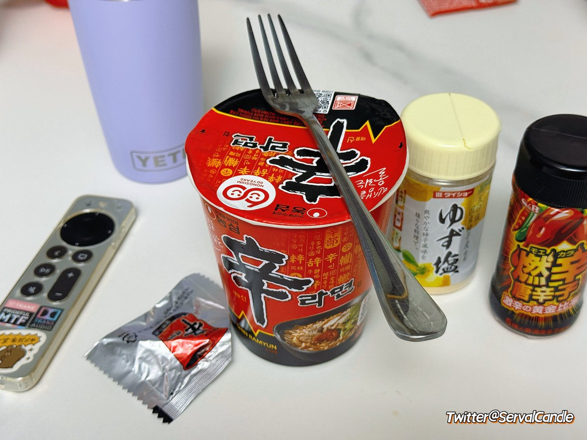

時璃風医詩🍥🌈
@hagishigure
@ServalCandle ciallo、少し食べて🥢😋

🙀大笨貓𝕮𝖆𝖓𝖉𝖑𝖊🎃🍂
@ServalCandle
笨猫忆苦思甜2
刚到澳大利亚还是未成年的小屁猫
成功在深夜的自贩机里买到了一碗杯面
就是这个辛拉面
然后那时候还不吃辣的北京口味小笨猫就直接被辣疯了（（（
说回来，现在只觉得不够辣(＞人＜;) https://t.co/IYZIjzIeBs https://t.co/35xS2OyeOZ